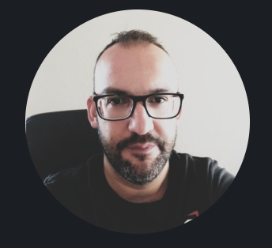

CNC Programmer & Operator | Technical Professional
Είμαι εξειδικευμένος χειριστής και προγραμματιστής CNC με πολυετή εμπειρία στη Sunlight Technosystems SA (πρώην Technoform SA). Ειδικεύομαι στον χειρισμό και προγραμματισμό τόρνων CNC (με έμφαση στο μοντέλο NLX 2500 και λογισμικό Mitsubishi), διασφαλίζοντας ακρίβεια, αποδοτικότητα και υψηλή ποιότητα παραγωγής, ενώ διαχειρίζομαι πολλαπλές μηχανές ταυτόχρονα.
Προηγουμένως, συγκέντρωσα σχεδόν 19 χρόνια εμπειρίας στη βιομηχανία επαγγελματικής ψύξης, με εστίαση στην κατασκευή καλουπιών, αποκτώντας ισχυρά θεμέλια στη μηχανική ακριβείας και την επίλυση προβλημάτων. Είμαι ταχύς μαθητής, παθιασμένος με την τεχνολογία και πάντα έτοιμος να συνεργαστώ με επαγγελματίες που εκτιμούν την καινοτομία.
Sunlight Technosystems SA (πρώην Technoform SA) | Ιουν 2020 - Σήμερα
Χειρισμός και προγραμματισμός σε τόρνους DMG (NLX 1500, NLX 2500/700 με Mitsubishi software) και κέντρα κατεργασίας Mazak. Βελτιστοποίηση διαδικασιών κατεργασίας για την επίτευξη απαιτητικών στόχων παραγωγής.
Ρούμελ Ι.Κ.Ε., Θεσσαλονίκη | Οκτ 2018 - Ιουν 2020
Υπεύθυνος αποθήκης – κατάψυξης (διεκπεραίωση παραγγελιών και παραλαβών).Βοηθός στην κεντρική αποθήκη πρώτων υλών. Οδηγός μικρού φορτηγού ( παράδοση παραγγελιών).
Κρύσταλ, Κιλκίς | Μαρ 2000 - Οκτ 2018
Χειριστής μηχανημάτων έγχυσης πολυουρεθάνης υψηλής και χαμηλής πίεσης (Hennecke, Oms group, Saip). Υπεύθυνος τοποθέτησης/αλλαγής καλουπιών, κατασκευής/συντήρησης και μοντάζ ψυγείων.
ΓΕΛ, Κιλκίς
Βαθμός Απολυτηρίου: 19
ΕΠΑΛ, Θεσσαλονίκη
Βαθμός Απολυτηρίου: 19,8
ΕΠΑΛ, Θεσσαλονίκη
Βαθμός Απολυτηρίου: 18,9
Operating and Programming CNC Lathe-Turning Center
ISO Geometrical Product Specification (ISO-GPS) - Level 1
InQuality | Εκδόθηκε: Οκτ 2023
Ελληνικό Ανοικτό Πανεπιστήμιο (ΕΑΠ)
Εκδόθηκε: Ιουν 2023
Διασώστης Σαμαρείτης | Ελληνικός Ερυθρός Σταυρός, Κιλκίς (Σεπτ 2021 - Σήμερα)
Μπορείτε να επικοινωνήσετε μαζί μου για επαγγελματικές συνεργασίες ή να κατεβάσετε το βιογραφικό μου: